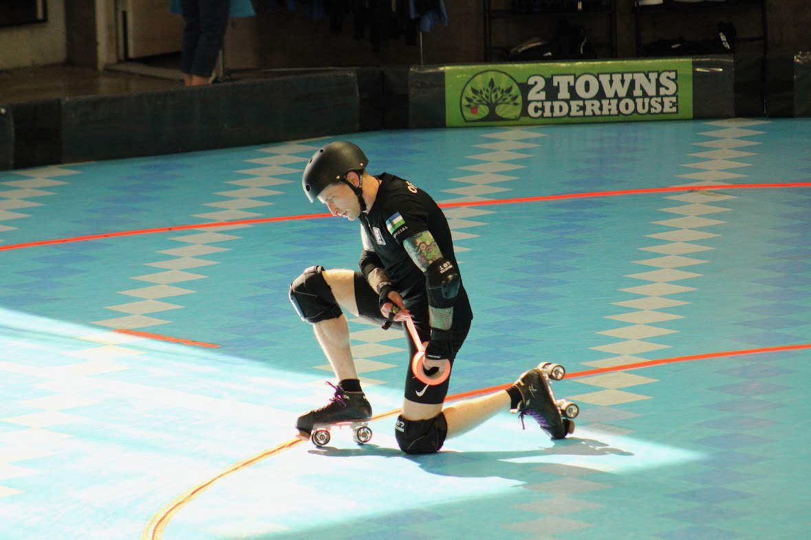
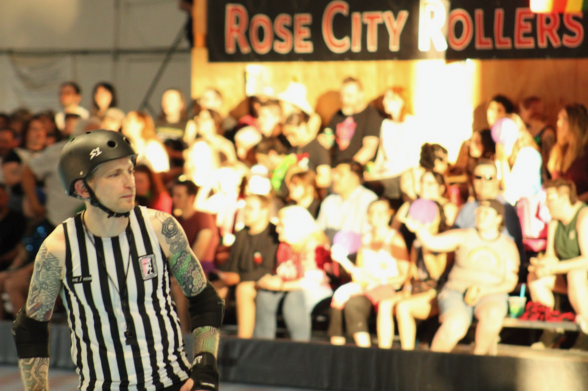

All changes to content on this site include date and time stamps to prove the application is complete before the due date. You may click here to review the complete build history for this site, and click here to review the complete source code history.(1)
View Date and Time Stamp Details
Hover your mouse cursor over any "...ago" text to display a tooltip that reveals the change date and time stamp.
The content of my application appears in several sections, various tabs, and expandable note boxes. Click or tap anywhere you see the icon to view each part of my application.
A Table of Contents menu appears on the left-side of all pages to provide you with quick access to three separate pages:
I'm Breadpool(1), and after a year of specific and intense preparation for this moment, this is my application to serve as a member of an officiating crew at the 2024 WFTDA Global Championship Tournament.
Derby Name Meaning
My derby name is a combination of two things:
I love to bake breads and pastries
My superpower is recovering from injuries and surgeries
This application describes the unique person I am and why I believe TOSP, WFTDA, and the global roller derby community will benefit from choosing me to officiate at the 2024 Global Championship. The effort I devoted to preparing this application is a small representation of the work I've done to have enough knowledge, experience, credibility, and skills to be ready to officiate for the highest-level teams and games in the world.
Whether or not you select me to be a member of an officiating crew, I hope the information and attention to detail in this application demonstrate how much this opportunity means to me, how badly I want to earn a place on a crew, and that I've given absolutely everything I have to warrant your consideration.
I am not a WFTDA-certified official at this time. However, achieving SO and NSO certification is very important to me. For me, becoming a certified official and continuously seeking higher-level certification is symbolic of:
My ongoing commitment to seek self-improvement.
Demonstrating I support the WFTDA and their officiating procedures.
Certification Timeline and Progress
I started the process to become a certified official in September of 2022 by studying for and passing WFTDA's online SO and NSO officiating certification courses.
At the beginning of 2023, I set a personal goal to build sufficient game experience to credibly apply for Level I SO and NSO certifications in 2024.
At the beginning of 2024, I set a personal goal to apply for and achieve Level I SO and NSO certifications.
I received the final OOS I need to apply for Level I SO and NSO certifications in July of 2024.
I intend to complete and submit my WFTDA officiating certification applications as soon as I complete and submit my application to officiate at the 2024 WFTDA Global Championship Tournament.
I am newer to officiating roller derby, although I've been officiating various sports and competitive activities most of my life. I started officiating when I was sixteen, operating the scoreboard at high school basketball games, and I've since officiated:
High school football.
High school Army JROTC drill competition.
U.S. Army recreational flag football.
BJJ tournaments at the local, regional, and international levels.
I’ve been competing in sports throughout my life, including over 20 years of Brazilian Jiu-Jitsu competition. Officiating is one way I contribute to serving future generations of competitors while honoring the people who have officiated for my own competitive athletic experiences.
Although each sport has unique officiating requirements and nuances, I find there are many common elements to the role of officiating across sports. I make this point because I believe one of the reasons I've been able to integrate effectively with the roller derby officiating community within a few years is my prior officiating experience:
Conducting myself in keeping with the professional nature of an official.
Communicating effectively with players, coaches, other officials, staff, and spectators.
Understanding that even the nicest people sometimes become elevated during competition, and affording them the space to be elevated without judging them or taking things personally.
Deescalating intense situations between players, coaches, officials, etc.
Not allowing player, coach, or crowd reactions to impact my judgment or responses.
Observing and remembering the details of high-speed gameplay actions.
Understanding the importance of allowing players to determine the outcome of contests.
Remaining calm, composed, and effective during high-stakes competition.
I began my derby officiating journey in August of 2022, although somewhat by accident. My daughter was new to the roller derby community and wanted to spend more time on skates than was available to her in practices and scrimmages. She decided to start attending officiating practice and asked that I join her so she wouldn't feel alone.
I wanted to support my daughter and the roller derby community, and having skated and officiated in different capacities for the majority of my life, I felt comfortable giving roller derby officiating a shot. I had no idea that I would leave that practice feeling like officiating roller derby was the thing I was meant to do.
Since that day, I've poured my heart and soul into becoming a better official, believing I can serve people, many of whom live within social margins, in a way that allows them to live safer, more fulfilling lives.
Where I happen to live affords me access to more opportunities to officiate roller derby than many people have, and I have access to highly experienced officials to learn from. I do everything I can to use my privilege for good by officiating for leagues and teams that most need extra support. That means I frequently officiate roller derby:
Outside of my home league, often in rural areas.
For junior roller derby leagues and teams.
For beginner-level teams, including those who play modified-contact games.
For marginalized communities, teams, athletes, etc.
Whether or not the gameplay is sanctioned or adheres to regulation play guidelines.
I wish to serve as a member of an SO crew as an OPR, JR, or IPR. I prefer to serve in an OPR or JR role, with no specific precedence between the two, because I believe I can officiate admirably in these roles for any level of play, including the highest-level play in the world.
Although I am not as strong of an IPR as I am an OPR or JR, I included the IPR role in my application because I want TOSP, the THR, and the CHRs to know they can confidently staff me in an IPR role, if necessary (planned or unplanned), or in the ALTR role, knowing I can immediately enter a game with confidence and effectiveness in any SO role.
Please click to expand the sections below for detailed information about what you can expect from me and how I position myself in each SO role.
What You Can Expect From Me
In any SO position, you can expect me to consistently exhibit and excel at:
Skating skills and speed that allow me to reliably be exactly where I need to be, rapidly recover if I am forced out of position, and avoid making contact with other players in situations where they may not be able to avoid making contact with me.
Awareness of which players have, earn, retain, lose, and reestablish superior positioning as players go out-of-bounds and return to in-bounds positions.
Thoroughly assessing and understanding which players initiate contact with other players.
Thoroughly assessing contact initiation game impact before I issue or decline to issue penalties.
Awareness of detailed information about the actions I observe that includes player-specific details (team and jersey number).
Continuous and dynamic positioning and repositioning to always be in the best position to observe game action.
Clear, slow, and slightly prolonged whistle blasts to help my peer officials in SO and NSO roles understand where and when to turn their attention.
Highly visible, deliberately slow, and consistently repeated verbal and visual cues to help my peer officials in SO and NSO roles understand exactly what I am observing and reporting.
Delivering verbal and visual cues, including issuing penalties, while maintaining the appropriate positioning for my SO role.
Maintaining observation of players before, during, and after each jam to ensure any potential contact or communication between teams has coverage.
Tracking the number of players and the positions for each player on each team before and during a jam.
Understanding and applying WFTDA rules in keeping with established rules theory and the appropriate situational discretion and judgment to facilitate safe and fair gameplay.
Behaviors that show inclusiveness, courtesy, support, respect, and validation to NSOs.
As an OPR, you can expect me to consistently exhibit and excel at:
Demonstrating high proficiency at each OPR position and the capacity to switch between any OPR position at any time without disrupting gameplay or creating a coverage gap.
Being the earliest and most decisive "dropping" OPR in the world, seeking to rapidly stop, accelerate in non-derby direction, and recover a new position whenever the speed of the pack has even the slightest potential to put me and my peers out of position.
Awareness of earned passes within my zone, to support the JR's on my crew with accurate points reporting.
Frequently communicating with my OPR peers to ensure our collective positioning and ability to observe game actions is optimal.
Non-verbal communication with players (pointing) reporting to and returning from the penalty box to help ensure they enter and exit the track safely.
Lateral movement that allows me to predominantly face my entire body toward the pack, giving me the best possible view of the pack and allowing me to rapidly accelerate and decelerate in any direction at any time.
Ready to rapidly accelerate in non-derby direction to follow and remain even with players up to the trailing edge of the rear engagement zone.
Shifting slightly behind the rear wall when jammers approach, so I can observe contact to the rear wall.
Shifting slightly in front of the rear wall to observe for illegal blocking techniques that create game impact.
In position to observe player positioning relative to the jammer line and outside boundary at the start of each jam.
As a middle OPR, I am, generally:
Parallel with a well-defined front wall of 3+ blockers.
Ready to rapidly accelerate in non-derby direction to observe the rear wall from the front when the front wall has 2 or fewer blockers.
Ready to reposition to be parallel with the rear wall when the rear OPR follows blockers moving in non-derby direction to the edge of the rear engagement zone, and ready to return to observing the front wall as the rear OPR reassumes control of the rear wall.
In position to observe player positioning relative to the pivot line and outside boundary at the start of each jam.
As a front OPR, I am, generally:
7-12 feet in front of the pack, directly next to the outside boundary looking in non-derby direction when the front wall has 3+ blockers.
Ready to rapidly transition to be parallel with a front wall of 2 or fewer blockers while maintaining a position that prevents blockers from getting forward of my position.
Ready to reposition to be parallel with the front wall when the middle OPR positions themselves to be parallel with the rear wall, and ready to return to a position forward of the front wall when the middle OPR positions themselves to be parallel with the front wall.
As a JR, you can expect me to consistently exhibit and excel at:
Keeping eyes on my jammer at all times to ensure nothing they do goes unobserved.
Clear, kind, and supportive communication with my SK, before, during, and after each game.
Awareness of potential NOTT points and understanding of when a jammer earns and does not earn those points.
Timely and accurate tracking and recall, by player, of earned passes, points, superior position, and positional gain.
Confident points reporting immediately after a jam ends (after the fourth whistle, not the twelfth whistle).
Continuous monitoring of the relationship between what I report to my SK and the information on the scoreboard.
Awareness of the space I occupy, how my position impacts my peer JR, and the ability to adapt to support fluid, dynamic movement with my peer JR throughout a tournament.
Anticipating situations that may result in a star pass that is difficult to see.
Lateral movement that allows me to predominantly face my entire body toward my jammer, giving me the best possible view of my jammer and allowing me to rapidly accelerate and decelerate in any direction, at any time.
Before each jam, I identify my jammer and align myself with their position, making sure I can observe their actions before and after the jam starting whistle.
Precise alignment with my jammer throughout the duration of each jam in a way that allows me to continuously and accurately observe my jammer's position relative to other players.
Frequent use of wheel-stopping techniques (hockey stops, power slides, etc.) to keep alignment with my jammer as they dynamically move within the pack and throughout the track.
As IPR, front or rear, you can expect me to consistently exhibit and excel at:
Comfort and confidence working from the front or rear IPR positions, depending on my HR/CHR's position preference.
Ability to define and track pack location plus adapt to the to the pack definition metrics of my peer IPR.
Ability to adapt to the pack reformation penalty metrics of my peer IPR such that reformation penalty distribution is fair and consistent.
Ability to monitor the precise location of skaters to accurately report pack conditions and movement.
Awareness of situations that may result in unexpected no-pack split scenarios.
Clear and loud verbal and visual cues that allow players to quickly understand and respond to warnings before penalty assessment.
Ability to rapidly and dynamically change my positioning and focus as game conditions and pack activities dictate.
Capacity to relay information information between officials, including relaying penalties from OPRs to PLTs.
Capacity to relay to JRs which players are OOP, NOTT, etc. and when, to support JRs accurate tracking and points reporting.
Ongoing communication with other officials about pack location and player positioning relative to the pack, specifically communicating the location of jammers relative to the pack and front engagement zone to JRs.
Awareness of where players re-enter the track relative to the front engagement zone.
Ability to "chase down" and issue an OOP warning to a pivot who leaves the front engagement zone while believing they are a jammer, after unsuccessfully taking a star pass.
Ability to rapidly accelerate while skating backward and skate backward at high speed without the need to look at the track boundary to ensure I remain off of the gameplay area.
7-10 feet in front of the pack, directly next to the inside boundary looking in non-derby direction when the pack is well-defined and managed by the rear IPR.
Ready to rapidly transition to a position where I am centered on the pack when the rear IPR moves to follow players in the rear engagement zone.
Ready to move out of the path of both JRs and quickly recover my original position.
Ready to provide primary pack definition coverage for the rear IPR in the event they are not available at the start of a jam or become unavailable during a jam.
As a rear IPR, I am, generally:
Centered on the pack when the pack is well-defined.
Ready to rapidly accelerate in non-derby direction to follow and remain even with players up to the trailing edge of the rear engagement zone.
Shifting slightly behind the rear wall when jammers approach, so I can observe contact to the rear wall.
Shifting slightly in front of the rear wall to observe for illegal blocking techniques that create game impact.
Ready to move out of the path of both JRs and quickly recover my original position.
In position to observe player positioning relative to the jammer line and inside boundary at the start of each jam.
I take the ALTR role very seriously and seek opportunities to serve as an ALTR. You can expect me to volunteer to serve as an ALTR with enthusiasm, engagement, and a focus on helping my officiating peers excel. As an ALTR, you can expect me to consistently exhibit and excel at:
Preparing myself physically before a game such that I could be activated at any moment of need, and maintaining that physical readiness throughout a game.
Maintaining situational awareness of game action so I am ready to enter a game or provide relevant feedback at any moment.
Readiness for activation to any position.
Readiness to provide individual or crew feedback at the request of the HR/CHR.
Understanding how to accurately record essential OR information.
Readiness to report game summary information (team/or penalty counts, number of timeouts remaining, etc.) to the HR/CHR at their request.
Attentiveness to the condition of the track, tape, rope, etc. and maintenance support.

ALTR, RCR Home Team Champs, June, 2024
Credit: Divo
I believe the best officiating happens when a crew behaves like a selfless, supportive, and blameless team that focuses on being better today than they were yesterday. These are the qualities you can expect from me as a member of an officiating crew:
1. My Mindset
I approach officiating just like I do playing any competitive sport, with the exception that my opponent isn't another person or team.
In my mind, mistakes are the opponent I ferociously train to beat, while recognizing mistakes are a relentless opponent that will never allow me to be rest.
I respect my opponent, although I do not fear them.
I seek to challenge my opponent at the highest levels because I'm driven to "win," and I prepare to be successful in the biggest moments.
"Winning" means my peers and I supported safe, fair gameplay in which the competing teams feel like they control the outcome.
I give my all to be the best teammate anyone has ever had, always seeking self-improvement and working to be someone who my peers trust, feel safe with, and love to work with.
2. Extreme Positivity
I show up with high enthusiasm, friendliness, excitement, and positivity to share with the officials I serve with, no matter how challenging game conditions might be.
Regardless of the circumstances, I bring fist bumps, high-fives, and verbal "Let's go!" cues to support and encourage my peers throughout the duration of each contest in an event.
I seek responsibility for my mistakes, make in-game adjustments, avoid dwelling on my mistakes so I keep my head in the game, and immediately extend apologies, where appropriate, to the people I impact with my mistakes.
I have the backs of my on- and off-skates crewmates, always, and they can count on me to encourage them in difficult situations.
When my officiating peers and leadership need me to make adjustments, I don’t dig my heels in about doing things a certain way, I give them my full support and do what they need me to do.
3. Strenuous Preparation
I practice developing and improving officiating skills, on- and off-skates at least 4 hours per week, and often upwards of 10 hours per week.
I actively seek feedback from other officials and relentlessly study game video to continuously learn and improve, and to position myself to best support safe and fair gameplay.
I physically train and condition 5-12 hours per week to maintain a high level of fitness, improve my ability to be in the best position to observe game action, and ensure I will not experience physical fatigue no matter how strenuous the environmental or game conditions might be.
I regularly study roller derby rules and cases to continuously develop a better understanding of roller derby rules theory because I believe learning to understand rules theory helps me quickly work through complex situations in a way that supports the best and safest possible gameplay experience.
4. Empathic Listening
I actively listen to officials, players, and coaches with genuine effort and concern to understand their points of view.
I seek to build trust by showing officials and teams they are heard and understood, even in cases where we may disagree with each other.
I actively solicit feedback from my peer officials by telling them no feedback will hurt my feelings.
For me, feedback is information I can use to be better today than I was yesterday, and I want to understand my mistakes, not ignore or hide from them.
5. Clear and Kind Communication
I speak to everyone with courtesy and respect, no matter how I am spoken to.
I do everything I can to actively communicate information with other officials in a way that promotes smooth, continuous game flow.
6. Keeping Athletes on the Track
I believe gameplay is best when athletes are on the track, not in the penalty box, and I observe game action in a way that seeks to avoid issuing penalties whenever possible.
For any action that might create sufficient game impact to warrant penalties, I describe the game impact to myself in a way I can recite during an official review before I issue any penalties (e.g., "Low block on yellow 2-4; caused purple 2-4 to go down").
I maximize the use of verbal warnings, prescribed by gameplay rules, to help athletes avoid committing penalties.
When I issue penalties, I include as much "3-star" information as possible to help athletes understand my basis for issuing penalties and help them avoid being assessed with the same penalty again (e.g., "Yellow 2-4, forearm; bracing on an opponent.").
7. Zone Ownership
I focus on officiating specifically within the confines of my area/zone of responsibility.
Said another way, I avoid immediately issuing penalties for actions I may not have the best point of view to observe.
If I believe I may have observed game action outside of my zone that warrants a penalty or even warrants reversing a penalty, I seek to discuss my observations with other officials during lineups to collaborate on our points of view and reach the best possible outcome.
8. Hustle
No matter what I do, I move with the utmost sense of purpose, often sprinting back and forth, to show everyone around me that my concern for serving the teams and peers I officiate with is equivalent to that of the highest-level competitors.
I apply the skills I've developed in over 20 years of Jiu-Jitsu and Judo training and competition to reduce the probability that I will fall and to recover from a fall with precision and explosiveness.
If I end up on the ground, I maintain eye contact with my zone of coverage to the extent possible, and return to my assigned responsibilities immediately, even if I am in discomfort from whatever took me down.
9. Versatility
Although this application is specific to SO roles, I work hard to continuously build skill and experience at each officiating position, on- and off-skates because I believe learning and practicing each role helps me be a better official and teammate for my SO and NSO peers.
I actively work to keep my OHD balanced between SO and NSO roles, officiating ≈2/3 of games in SO roles and ≈1/3 of games in NSO roles.
Whenever needed, I am comfortable serving in any SO or NSO role, with or without advanced notice. (1)
NSO Role Caveat
Although I practice working with CRG extensively, including IGRF and statsbook preparation, I do not have game experience in the role of HNSO.
10. Courage To Do What's Right
Making split-second, difficult decisions is simply part of being an official, and I believe that applies to all levels in all sports.
Of course, there are no prescriptive guidelines for what the "right" thing to do is, although my peers can count on me to use good judgment, be decisive in key moments, and own responsibility for the decisions I make, whatever the outcome.
I am a physically disabled U.S. Army veteran, and I believe I fit within the category of people with hidden disabilities. I seek to inspire people who have physical disabilities, just like me, to do more than they or perhaps the world believes they are capable of.
When serve in an SO role, nobody sees me and thinks I’m disabled, guesses I have an extensive injury history that includes 20 x surgeries, nor has any idea how much daily work I do to physically function, gear up and skate, and excel at high-intensity physical activities.
Intense rehabilitation to recover from injuries is my superpower. For example, I served as an SO less than two weeks after a total hip replacement last year because I spent hours and hours each day rehabilitating, strengthening, and specifically training to be ready to skate.
I want people with physical disabilities to see me as an example that it’s possible for them to experience the joy and fulfillment from strenuous sports and activities.
I've loved intense athletic competition for as long as I can remember, first competing in a running race at the age of 5. I love the grind of physical preparation, the struggle of mental readiness, the joy of successes, the pain of failures, and even the process to recover from the devastation of injuries, just for the chance to compete again.
Military service disabilities and sports injuries now prevent me from competing in the sports I've spent most of my life learning, playing, and loving. Losing the ability to compete in these sports in recent years crushed me, leaving me feeling without purpose and desperate for a way to fill the competitive athletic void in my life.
Officiating roller derby has allowed me to feel like my chance to participate in competitive athletic activities isn't yet over because, at least for the time being, my body still allows me to roller skate with high intensity. Even though I am not a competitor on the track, officiating allows me to experience the joy of competitive preparation through intense physical training, rules study, video analysis, and practicing with peers who push me to be better every day.
The first time I attended a roller derby officiating practice, one of the coaches told me:
Quote
"There are people here who've officiated at the WFTDA Championship level. If you're willing to show up, work your butt off, and be humble about it, you might get a chance to do the same someday."
That moment offered me a chance to experience competition in a way that I thought was gone forever, and gave me hope that I could once again feel the joy of training to be a champion. Driven by that hope, I've poured my soul into doing everything I can to have a shot at being a member of a WFTDA Championship officiating crew.

IPR, RCR Home Team Champs, June, 2024
Credit: Divo
I believe the unique circumstances of my life prepared me for this opportunity. The intersection of my circumstances, choices, experiences, successes, failures, dreams, and my life's purpose combined to make this the one thing I've wanted so badly that I've poured my entire life into having the chance.
Thank you for the opportunity to apply and for considering my application. If you select me to be a member of an officiating crew, I will reward your decision with the dedication, preparation, and performance of a champion.
{kind=link}
{kind=link}
{kind=link}

{kind=link}

{kind=link}
{kind=link}

{kind=link}

{kind=link}
{kind=link}
{kind=link}
{kind=link}
{kind=link}
{kind=link}
{kind=link}
{kind=link}